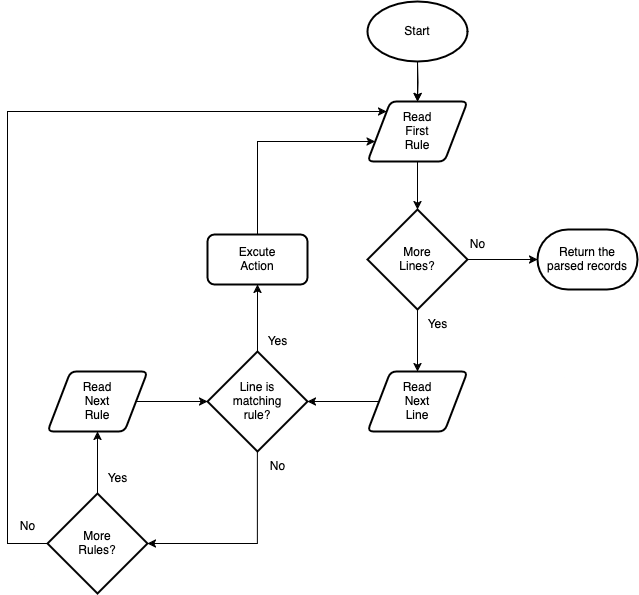
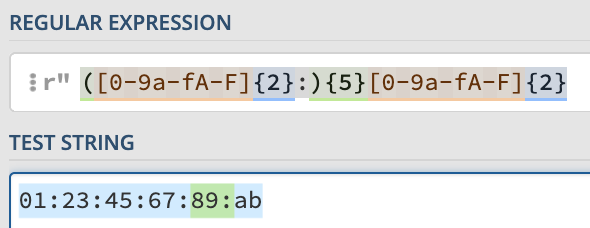

Parsing text with TextFSM¶

TextFSM is a framework developed by Google that transforms (parses) human-readable text into structured, machine-readable output.
TextFSM is available as a Python module and is one of the essential tools to automate a network device that requires CLI interaction, because it lets us interpret the output and make decisions.
Let's look at an example: we want to analyze the interfaces of a switch and shut down the ones that are not connected.
The following output is human-readable, but we cannot use it directly in a script.
MGMTSWITCH1#show interfaces status
Port Name Status Vlan Duplex Speed Type
Gi1/0/1 to SRV1:eth1-1 connected 58 a-full a-1000 10/100/1000BaseTX
Gi1/0/2 to SRV2:mgmt0 notconnect 58 auto auto 10/100/1000BaseTX
Gi1/0/3 disabled 1 auto auto 10/100/1000BaseTX
Gi1/0/4 to SRV3:mgmt0 notconnect 58 auto auto 10/100/1000BaseTX
Gi1/0/5 notconnect 1 auto auto 10/100/1000BaseTX
Gi1/0/6 to ESXi2:vmnic0 connected trunk a-full a-1000 10/100/1000BaseTX
Gi1/0/7 to SRV4:CIMC connected 58 a-full a-1000 10/100/1000BaseTX
Gi1/0/8 to Router:Gi0/0 connected 58 a-full a-1000 10/100/1000BaseTX
Gi1/0/9 notconnect 1 auto auto 10/100/1000BaseTX
Gi1/0/10 notconnect 1 auto auto 10/100/1000BaseTX
TextFSM converts the output above into a structured format:
[['Gi1/0/1',
'to SRV1:eth1-1',
'connected',
'58',
'a-full',
'a-1000',
'10/100/1000BaseTX'],
['Gi1/0/2',
'to SRV2:mgmt0',
'notconnect',
'58',
'auto',
'auto',
'10/100/1000BaseTX'],
['Gi1/0/3', ' ', 'disabled', '1', 'auto', 'auto', '10/100/1000BaseTX'],
['Gi1/0/4',
'to SRV3:mgmt0',
'notconnect',
'58',
'auto',
'auto',
'10/100/1000BaseTX'],
Finite State Machine¶
TextFSM operates as a finite state machine (FSM). It starts from the Start state and implicitly ends at the EOF state, which is reached at the end of the file.

The process works as follows:
- The FSM reads the first line of the input text.
- It matches the line against a set of rules, starting from the top.
- If a rule matches, the FSM executes the corresponding action and "consumes" the line.
- It reads the next line of the input and matches it against the rule set again, starting from the top.
- When the entire input has been processed, the FSM terminates and returns the structured output.
The actions, described below, can modify the default behavior of the FSM.
Rule Actions¶
A simple template contains a set of rules within the Start state, which is mandatory. The Start state is the entry point of the FSM and processes the rules defined within it, starting from the first.
Each rule consists of a regular expression followed by one or more optional actions. The actions fall into these categories:
- Line Action: controls the selection of the next input line and, consequently, which rule is applied next.
- Record Action: controls how the extracted values are stored in a record.
- State Transition: moves the FSM to a different state.
Consider the following example:
The corresponding template is:
Value SLOT (\S+)
Value MODULE (\S+)
Value PORT (\S+)
Start
^\s*Gi${SLOT}/${MODULE}/${PORT}\s*$$ -> Record
^\s*$$
^. -> Error "unexpected line"
In this example, we have three rules within the Start state:
- The first rule matches the text
Gi1/0/1and extracts the fieldsSLOT,MODULEandPORT. When this rule matches, theRecordaction is used. - The second rule matches any line that contains zero or more spaces. The default action is
NoRecord. - The third rule raises an error if a line does not match any of the previous rules. This is a best practice, because it catches template errors as early as possible.
TextFSM Line Actions¶
As discussed, each TextFSM rule can trigger three types of actions: Line Actions, Record Actions and State Transitions.
Line Actions define the behavior of the FSM after processing the current input line:
Next(default): finishes processing the current line, reads the next one and resumes matching from the first rule of the current state.Continue: retains the current line and does not reset the matching to the first rule. Processing continues as if no match had occurred (although the variable assignments still take place).
The Continue action is often used together with Record (e.g., Continue.Record) when a line both starts a new record and contains values that must be captured into fields.
Consider the following example:
PING 10.0.0.1:
size=64 icmp_seq=0 ttl=64 time=0.211 ms
PING 10.0.0.2:
size=64 icmp_seq=0 ttl=64 time=2.011 ms
The associated template:
Value DESTINATION (\S+)
Value SIZE (\S+)
Value SEQ (\S+)
Value TTL (\S+)
Value RTT (\S+)
Start
^PING.*$$ -> Continue.Record
^PING ${DESTINATION}:\s*$$
^\s*size=${SIZE} icmp_seq=${SEQ} ttl=${TTL} time=${RTT} ms\s*$$
^\s*$$
^. -> Error
In this example:
- The first rule detects the beginning of a new record (and implicitly closes the previous one).
- The second rule is triggered on the same input line and saves the field values into the new record.
- The first record contains only null fields and is therefore discarded by the FSM.
Continue is frequently used when a field consists of a list of values located on the same line.
Consider the following example:
Value VLAN (\S+)
Value List INTERFACES ([^,]+)
Start
^vlan.* -> Continue.Record
^vlan ${VLAN} -> Continue
^vlan \S+ ${INTERFACES} -> Continue
^vlan \S+ (?:[^,]+,){1} ${INTERFACES} -> Continue
^vlan \S+ (?:[^,]+,){2} ${INTERFACES} -> Continue
^vlan \S+ (?:[^,]+,){3} ${INTERFACES} -> Continue
^vlan \S+ (?:[^,]+,){4} ${INTERFACES} -> Continue
^vlan.*
^\s*$$
^. -> Error
This example uses a more comprehensive approach:
- As in the previous example, the first rule closes the current record.
- From the second rule onward, the line is evaluated by multiple rules thanks to the
Continueaction. - The second rule captures the VLAN.
- The third rule saves the first interface associated with the VLAN.
- The fourth to seventh rules save the subsequent interfaces.
- The eighth rule consumes the entire line, whose values were already saved by the previous rules.
- Since we cannot know the interface names in advance, the interface regular expression matches a substring up to the next comma, which acts as the delimiter.
- The same regular expression, including the comma, is reused in rules 4 through 7 to shift the captured value progressively.
TextFSM Record Actions¶
As discussed, each TextFSM rule can trigger three types of actions: Line Actions, Record Actions and State Transitions.
The available Record Actions are:
NoRecord(default): the FSM moves to the next line of input and re-evaluates the rules from the beginning of the current state, using the same record.Record: the collected values are saved into a record. The field options (explained later) can affect whether the record is stored: for example, a record that lacks aRequiredfield is not saved.Clear: clears all the fields of the current, unsaved record that are not marked asFilldown.Clearall: clears all the fields of the current, unsaved record, including those marked asFilldown.Error: raises an error and stops the execution of the FSM. We can provide an optional error message.
When both a Line Action and a Record Action are present, we separate them with a dot: e.g., Continue.Record, Next.NoRecord. We can always omit the default actions when they are not needed.
State Transition¶
The final action type lets the FSM transition between states. As noted, the initial state is always Start and must be defined explicitly. The final state is implicitly EOF, reached once the entire input has been processed. A special state called End can also be invoked to terminate the execution early.
We can define as many states as we need and create rules to move between them.
A state transition consumes the current input line, and we cannot use Continue together with a state transition. This restriction keeps the FSM loop-free.
Consider the following example:
Value VLAN (\S+)
Value List INTERFACES ([^,]+)
Start
^CONFIGURED -> VLANTable
^\s*$$
^. -> Error
VLANTable
^vlan.* -> Continue.Record
^vlan ${VLAN} -> Continue
^vlan \S+ ${INTERFACES} -> Continue
^vlan \S+ (?:[^,]+,){1} ${INTERFACES} -> Continue
^vlan \S+ (?:[^,]+,){2} ${INTERFACES} -> Continue
^vlan \S+ (?:[^,]+,){3} ${INTERFACES} -> Continue
^vlan \S+ (?:[^,]+,){4} ${INTERFACES} -> Continue
^vlan.*
^\s*$$
^. -> Error
This example is similar to the previous one, but in this case we identify the lines that separate sections. The header lets us use a dedicated state for the VLAN analysis.
Value Definitions¶
Now that we have clarified how the FSM works, we can look more closely at how values (fields) are defined in templates. Values are declared in the first section of the template, and each field follows this structure:
Value: indicates that the line defines a field.option: modifies the behavior of the field within the FSM.name: specifies the name of the field.regex: defines how TextFSM extracts the value, using a regular expression.
The available options are:
Required: the record is valid only if this field is populated. Otherwise, the record is discarded.Filldown: the value of the field is retained for the subsequent records, unless it is redefined or cleared. It is useful when a field, once defined, applies to multiple following records.Fillup: similar toFilldown, but it applies the value to the previously captured records that do not yet have a value for this field.Key: declares that the field contributes to the unique identifier of a row.List: specifies that the field contains a list. The matched values are appended to this list.
The most complex part is often crafting suitable regular expressions. Here are a few common examples:
\S+: a sequence of non-whitespace characters.\s+: a sequence of whitespace characters.[^,]+: any sequence of characters excluding commas.\d+: a sequence of digits.[A-Fa-f0-9]+: a hexadecimal string.([0-9a-fA-F]{2}:){5}[0-9a-fA-F]{2}: a MAC address in the format01:23:45:67:89:ab(fivexx:groups followed by a finalxx).\d+(\.\d+){3}: an IP address in the format10.23.45.167(digits, followed by three.xxxoccurrences).up|down|administratively down: a string that matches exactly one of these states.
An online regex testing tool is very helpful to validate our expressions quickly.

References¶
- TextFSM (official page by Google)
- TextFSM (archived Wiki by Google)
- A Beginner's Guide to TextFSM for Network Automation
- TextFSM - Changing a state
- TextFSM sandbox
- RegEx sandbox
- Collection of TextFSM templates by Network to Code
The input text and the associated template are available in the GitHub repository.